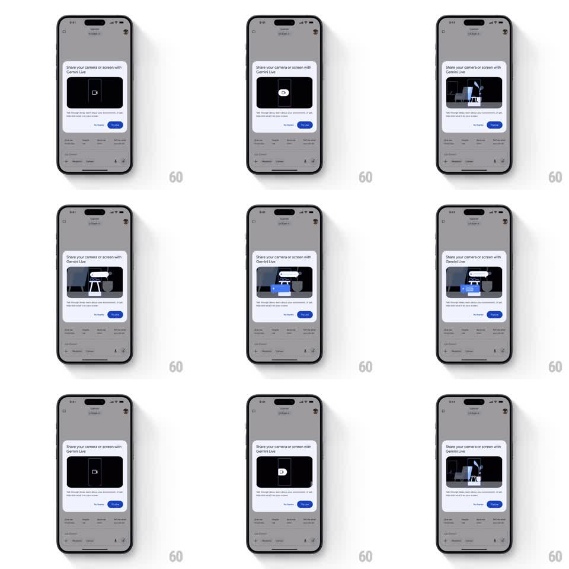

Media
Frame-by-frame

Rebuild this animation 1:1: Google Gemini's feature popup - a modal card titled "Share your camera or screen with Gemini Live" auto-plays a looping vector illustration that demonstrates the camera-share flow, over the dimmed chat screen.

Rebuild this animation 1:1: Google Gemini's feature popup - a modal card titled "Share your camera or screen with Gemini Live" auto-plays a looping vector illustration that demonstrates the camera-share flow, over the dimmed chat screen. ## Integration Integration: stack-agnostic spec - springs given as stiffness/damping, timed motions as duration + curve; map every value to your framework and animation library of choice. ## Scene Dimmed Gemini chat behind a rounded white modal card. Card contents: title "Share your camera or screen with Gemini Live", a dark rounded video/illustration panel, body copy about talking through what's on camera or screen, and two buttons: "No thanks" (text) and "Try it now" (blue pill). The illustration panel plays a looping demo: a phone frame with a camera icon transitions into a scene of a person at a desk with a labeled speech bubble. ## Motion spec Pattern: auto-playing looping illustration inside a static modal. - Modal entrance: card scales 0.92 -> 1 with fade (250ms, ease-out); backdrop dims to 40% (200ms). The card then stays perfectly still. - Illustration loop (inside the panel only): start frame is a dark phone outline with a centered camera glyph (hold 800ms); the phone splits/slides aside (350ms) revealing the scene; scene elements pop in - person, desk, plant (scale 0.8 -> 1, 60ms stagger, 250ms); a speech bubble with a label springs in above (spring ~340/16, 300ms); hold (1.2s); all scene elements fade (300ms) back to the phone frame; repeat. - The loop is seamless: the final fade crossfades into the first frame. ## Calibration - Motion lives entirely inside the illustration panel - the card, title, and buttons never animate after entrance. - Scene palette is flat blue/gray vector on a dark panel. ## Reduced motion The illustration shows a single static composite frame; no loop. ## Don't miss - "Try it now" is a filled blue pill; "No thanks" is plain blue text - do not buttonize both. - The chat content behind stays legible but dimmed; no blur.